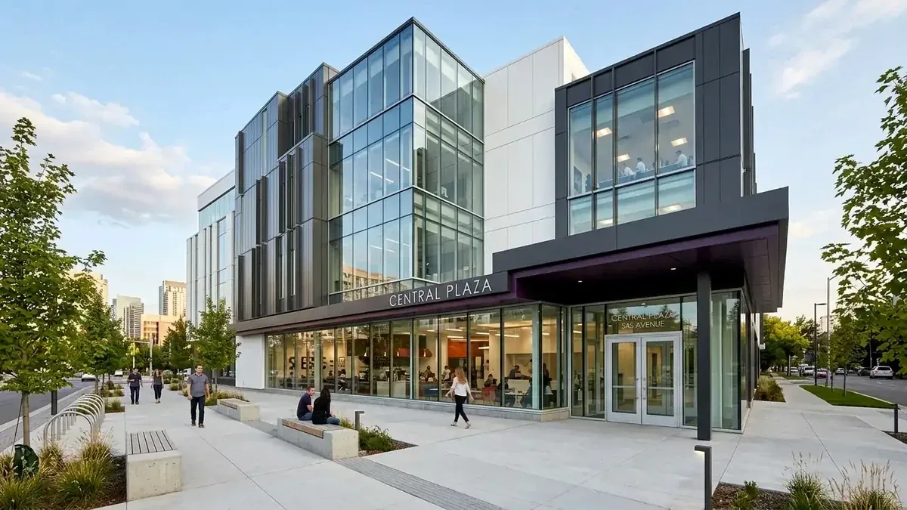

Berapa Estimasi Hemat Sistem Borongan Penuh dibanding Setengah Jadi?
Sistem borongan penuh lebih hemat total biaya untuk skala proyek komersial karena mencegah risiko pembengkakan harga material dan klaim pengerjaan berulang dari Kontraktor Bangunan.
Berdasarkan laporan BPS Survei Konstruksi Indonesia 2025, sebanyak 64,2% proyek komersial skala menengah di perkotaan yang menggunakan sistem borongan setengah jadi mengalami pembengkakan anggaran rata-rata sebesar 18,5% akibat fluktuasi harga material eceran dan biaya pengawasan mandiri.
Sementara itu, data Asosiasi Kontraktor Indonesia (AKI) tahun 2025 mencatat bahwa penggunaan jasa Kontraktor Bangunan dengan sistem borongan penuh mampu menekan kebocoran material (*waste*) hingga 12% dibanding pengadaan mandiri.
Dalam konteks pembangunan sarana kantor dan ruang komersial, efisiensi bukan sekadar melihat angka pada penawaran awal, melainkan memperhitungkan Total Cost of Ownership (TCO). Borongan penuh memberikan garansi kelancaran operasional tanpa menyita waktu manajemen bisnis Anda.
- Pengadaan Skala Besar: Kontraktor rekanan memiliki akses langsung ke distributor utama pabrikan (*tier-1 supplier*), menghasilkan diskon volume 10–15% lebih murah daripada pembelian ritel oleh tim *procurement* internal.
- Proteksi Fluktuasi Pasar: Dalam sistem kontrak *lump sum fixed price*, risiko kenaikan harga semen, baja tulangan, atau kaca sepenuhnya dimitigasi oleh kontraktor pelaksana.
Apa Definisi dan Cakupan Kontraktor Borongan Penuh?
Kontraktor borongan penuh adalah skema kerja di mana kontraktor menyediakan seluruh kebutuhan proyek, mulai dari tenaga kerja, material, alat berat, hingga pembersihan akhir.
Pada skema ini, pemilik gedung menyerahkan seluruh tahapan konstruksi kepada pihak Kontraktor Bangunan. Cakupan kerjanya meliputi:
- Pekerjaan Persiapan dan Struktur: Penggalian, fondasi (*bored pile* / tiang pancang), pembesian, bekisting, dan pengecoran beton bertulang gedung kantor.
- Pekerjaan Arsitektural dan Finishing: Pemasangan dinding bata/panel ringan, plesteran, acian, pengecatan gedung eksterior & interior, instalasi ubin granit/vinil, kusen pintu aluminium, serta plafon akustik kantor.
- Pekerjaan Mekanikal, Elektrikal, dan Plumbing (MEP): Pemasangan jaringan listrik kantor, pencahayaan hemat energi (LED), kabel data/LAN, sistem hidran & *sprinkler*, sanitasi air bersih/kotor, serta integrasi sistem pendingin udara (AC sentral/VRV).
Sistem borongan penuh menjamin harga pasti (*lump sum*) sehingga manajemen perusahaan tidak perlu khawatir atas lonjakan harga material di tengah jalan. Opsi ini sangat ideal untuk perusahaan yang membutuhkan penyelesaian proyek secara tepat waktu tanpa gangguan operasional harian.
Apa Definisi dan Cakupan Kontraktor Borongan Setengah Jadi?
Kontraktor borongan setengah jadi adalah skema pengerjaan yang membatasi lingkup kerja kontraktor pada tahap struktur awal atau hanya penyediaan jasa tenaga kerja saja.
Dalam skema borongan setengah jadi (sering disebut borongan jasa saja atau borongan struktur), Kontraktor Bangunan hanya bertanggung jawab menyelesaikan pengerjaan fisik utama seperti fondasi, tiang, balok, pelat lantai dak, dinding batas, dan rangka atap. Pemilik bisnis harus mengurus pengadaan material finishing seperti ubin, instalasi interior kantor, partisi partisi kerja, pintu kaca, hingga perangkat pencahayaan secara terpisah.
Sistem ini memberikan kendali penuh kepada Anda dalam memilih merek dan kualitas bahan bangunan. Namun, skema ini menuntut keterlibatan intensif dari pihak pengadaan kantor untuk mengawasi pengiriman material, meminimalkan limbah bahan, dan memastikan ketersediaan barang di lokasi tepat waktu agar pekerja tidak menganggur.

Estimasi biaya proyek konstruksi menggunakan Kontraktor Bangunan profesional menjamin transparansi RAB dan jadwal pelaksanaan yang ketat.
Bagaimana Perbandingan Biaya dan Efisiensi Kedua Sistem?
Perbandingan biaya borongan penuh dan setengah jadi terbagi atas pengeluaran langsung material, alokasi jasa pekerja, serta implikasi waktu operasional manajemen perusahaan.
Berikut adalah gambaran umum perbandingan kedua sistem untuk proyek pembangunan sarana kantor dan gedung komersial:
| Parameter Perbandingan | Sistem Borongan Penuh | Sistem Borongan Setengah Jadi |
|---|---|---|
| Harga Material | Dihitung paket (*bulk purchase discount*) dari prinsipal resmi. | Harga eceran pasar / komersial biasa dengan selisih lebih mahal. |
| Kepastian Anggaran | Sangat Tinggi (*Fixed Price Lump Sum*). | Sedang hingga Rendah (Rawan pembengkakan/*Overbudget*). |
| Beban Pengawasan | Dilakukan penuh oleh Tim Pengawas & Supervisor Kontraktor. | Membutuhkan Tim Pengawas & Logistik Internal Kantor mandiri. |
| Risiko Kerusakan Material | Tanggung jawab penuh pihak kontraktor pelaksana. | Tanggung jawab pemilik gedung / divisi *procurement*. |
| Waktu Penyelesaian | Lebih terukur, terjadwal ketat, dan memiliki target *milestone*. | Berisiko tertunda jika pasokan material tersendat di lapangan. |
| Garansi Pemeliharaan | Garansi terpadu satu pintu (*one-stop warranty*). | Klaim terpecah antara penyedia jasa fisik dan vendor material. |
Jika perusahaan Anda memiliki tim *procurement* berpengalaman serta rantai pasok material yang kuat, borongan setengah jadi bisa memangkas biaya jasa awal. Namun untuk kepastian operasional bisnis tanpa gangguan, borongan penuh dari Kontraktor Bangunan terbukti lebih aman dan terprediksi.
Kapan Anda Harus Memilih Borongan Penuh untuk Kantor?
Borongan penuh harus dipilih jika proyek memiliki batas waktu penyelesaian yang ketat dan perusahaan tidak memiliki pengawas konstruksi internal khusus.
Pilihlah sistem borongan penuh dari Kontraktor Bangunan apabila kondisi bisnis Anda memenuhi kriteria berikut:
- Menginginkan Sistem Serah Terima Kunci (*Turnkey Project*): Di mana gedung kantor langsung siap dihuni, lengkap dengan seluruh instalasi listrik, pencahayaan, sanitasi, dan partisi ruangan.
- Tidak Memiliki Divisi Fasilitas Khusus: Perusahaan tidak memiliki divisi *facility management* atau insinyur sipil internal yang dapat memantau pengerjaan fisik setiap hari di lokasi proyek.
- Didanai oleh Pinjaman Bank atau Investor: Proyek membutuhkan Rencana Anggaran Biaya (RAB) final yang mengikat dan pasti tanpa variasi harga harian untuk keperluan pelaporan keuangan audit.
- Fokus pada Pertumbuhan Bisnis Inti: Manajemen puncak dapat tetap berfokus pada operasional bisnis inti (*core business*) tanpa terdistraksi masalah logistik pasir, semen, atau keterlambatan tukang.
- Untuk proyek kantor skala di atas 200 m², skema borongan penuh secara statistik menghemat 14% waktu pengerjaan dan mengurangi *cost of idle labor* dibandingkan manajemen swakelola setengah jadi.
Apa Saja Kesalahan Umum Saat Memilih Sistem Borongan?
Kesalahan umum pemilik bisnis adalah tergiur harga awal borongan setengah jadi yang tampak lebih murah tanpa memperhitungkan biaya tersembunyi dan pengadaan material.
Beberapa kesalahan krusial yang sering terjadi antara lain:
- Tidak Menghitung Biaya Material Sisa (*Waste*): Pembelian bahan bangunan secara mandiri kerap menyisakan material berlebih yang tidak terpakai (seperti potongan keramik, besi sisa, atau semen mengeras) sehingga membengkakkan pengeluaran hingga 8–15%.
- Abaikan Garansi Pemeliharaan: Sistem borongan setengah jadi sering memicu aksi lempar tanggung jawab antarpenyedia jasa saat terjadi kebocoran atap atau keretakan plesteran pada masa pemeliharaan gedung.
- Kontrak Kerja Ambigu: Tidak mencantumkan spesifikasi teknis (*Spesifikasi Material & Merek*) secara eksplisit dalam dokumen perjanjian kerja bersama Kontraktor Bangunan.
- Mengabaikan Biaya Logistik & Keamanan Lahan: Menyediakan material sendiri mewajibkan Anda menanggung ongkos kirim armada berulang kali serta risiko pencurian material di area proyek terbuka.
FAQ seputar Kontraktor Borongan Penuh vs Setengah Jadi
Kesimpulan Praktis
Memilih antara kontraktor borongan penuh vs setengah jadi bermuara pada kesiapan manajemen internal dan skala proyek Anda. Borongan penuh memberikan efisiensi total, kepastian biaya, dan kualitas terjamin dari satu pintu. Untuk hasil terbaik yang tepat waktu dan efisien, percayakan seluruh pengerjaan sarana operasional bisnis Anda kepada Kontraktor Bangunan terpercaya.